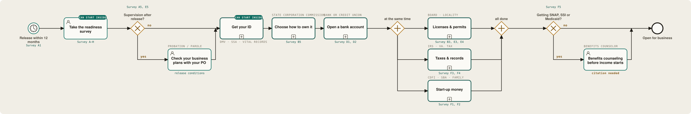

A public encyclopedia of legal process · first worked example
The road from release to a business of your own, drawn step by step.
People who have been through the system know how its processes really work. Doing Process turns their hand-drawn maps into a public, machine-readable record of the law in action. Our first full example: everything it takes to start a business after prison — ID, bank account, licenses, taxes, money — and which steps can begin before the gate opens.
01 The idea
Lived procedure is expertise. We give it a form and a home.
A legal process is just a sequence: who does what, in what order, under which law. Grievances, appeals, parole, sealing a record — and now, the long run of filings between a release date and a first paying customer. The people who run these gauntlets learn them cold, and that knowledge mostly goes unrecorded and uncredited.
Doing Process captures it as a process map in BPMN — boxes, arrows and decision diamonds, the same notation courts and companies use. Drawn on paper, a map can be scanned, read by software into a machine-readable model, checked against the law each step cites, and published for anyone to read or build on.
Why a business, of all things?
- It is often the most open door. A background check can close a job without a word; a license board has to give reasons, and a customer only asks whether you can do the work.
- It is a legal process end to end. ID, banking, entity, license, tax, benefits — nine offices, each with its own rules and clocks. Exactly what a map is for.
- Much of it can start inside. Documents, training hours, a credit report, a business plan. The green tags on our maps mark those steps.
- It is honest about the hard parts. Debt, suspended licenses, supervision conditions and benefit cliffs are on the map, not in a footnote.
02 The road
Thirteen stops, nine offices, one person.
The whole path from a release date to an open business, as one process. Every box with a plus sign is a smaller map of its own — getting an ID alone runs through five offices. Answers to the readiness survey decide which stops a person actually needs.

Scroll sideways. It is a long road; that is the point.
03 How the pieces fit
A survey, a set of rules, and maps drawn by the people who walked them.
Each piece is useful alone. Together they turn "here is how it works" into "here is your path", without asking anyone for their name.
The readiness survey
About 45 check-box questions, written at a 6th-grade level, anonymous by default. Every question carries a code (A1, C3 …) that maps to a step in the model. Read it →
Decision tables, one state at a time
Which trades need a license, which records a board may weigh, which bank account fits, which entity to form. DMN tables hold the rules so they can be edited and tested apart from the map.
A pre-filled case
Survey answers become process variables. The model opens the steps a person needs and skips the rest: no ID subprocess for someone holding a valid license, no employer accounts for someone working alone.
Maps from inside
People who have done a step draw it: the DMV visit, the board hearing, the second-chance account. One process per page, a role and a rule on every step. Mailed in, scanned, recognized locally.
Lint, review, sign off
A linter demands a citation on every step and real deadlines on every clock. A person corrects, redacts and releases each map under CC0. Until then it says draft, and gaps say citation needed.
Programs, mentors, lenders
A reentry class teaches from the map. A mentor walks one path with one person. A CDFI or credit union plugs into the banking and microloan branches. Every map is free to reuse.
04 Who it is for
One map, many readers
Because a map is both human-readable and executable, the same artifact serves the person on the path, the staff beside them, and the institutions whose rules they are navigating.
A path you can see
What comes first, who you will deal with, what it costs, how long it takes, and which parts you can finish before release.
What can start inside
The staff survey records what a facility can support — ID help, tablets, mentors — so the model knows which steps can begin before the gate.
A curriculum with a spine
Teach the road in order. The survey's learning section shapes delivery; the crosswalk shapes the syllabus.
A ready-made referral
The banking and funding branches name where a second-chance account or a microloan fits, and what has to be true first.
Where the rules bite
Seeing a record screen, a reinstatement fee or a benefit cliff on the map shows exactly which rule costs how many weeks.
A living corpus
Material for process mining and conformance work — how procedures are written versus how they actually run, state by state.
05 The path a map travels
From a mailed drawing to the commons
The route one map travels. It is itself a process — so here it is as one. Every stage runs on owned hardware; a person signs off before the corpus is touched.
Draw
One process per page: a step, the role that does it, and the rule it comes from.
Mail & scan
The page is mailed in, scanned, deskewed, and cleaned so software can read it.
Recognize
A local model turns the drawing into BPMN — detector or vision model, never a cloud.
Check
A linter enforces the rules: real deadlines, a citation on every step, nothing unsupported.
Sign off
A person corrects it, strips identifying details, and releases it under CC0 with a handle.
Publish
The map enters Lexipedia, merged and cross-referenced with the rest of the corpus.
06 The handbook
How to take part
Two roles, one workflow. Contributors draw; operators run the intake. Both are documented so the whole thing stays legible and auditable.
Draw a map we can read
- One process per page; name it and the office at the top.
- Write each step as an action; name the role, never a person.
- Put the rule number beside every step — a step without its law can't be used yet.
- Diamond for a decision, clock for a deadline, circle to start, doubled circle to end.
- You're never published under your legal name — you pick a handle, and whether it shows at all.
Run a short, auditable pipeline
- Redaction first. Legal identity lives only in the restricted originals archive.
- Recognize locally. Detector or local vision model; OCR local or off — no cloud.
- Lint before merge. ISO-8601 timers, a citation per step, execution-safe elements only.
- Provenance + sign-off. Source hash, contributor ID, license, reviewer — blocked on errors.
- Publish. Only then does the map join the corpus, under CC0.
07 Open & local
Owned end to end, on purpose
The whole pipeline runs on your own hardware with local models — a deliberate choice, so that material from people inside prisons never depends on a third party.
Recognition, OCR, checking, and storage all run on owned hardware. No scan or draft touches a cloud service.
Code is Apache-2.0; every contributed map is CC0. The maps on this site are plain BPMN files you can open in any modeler.
Recognition is automatic; publication is not. A person reviews and releases every map, and every citation.
Built on open standards and projects — BPMN & DMN · SpiffWorkflow · bpmn-js · hdBPMN · Lexipedia
08 Get involved
If any of this is yours to help with, get in touch.
Facilities and reentry programs that can field the survey or carry the mail. Credit unions and CDFIs for the banking and microloan branches. Licensing boards willing to check a map of their own process. People who have started a business after release and can tell us where the map is wrong. And anyone who can add the next state.
hello@doingprocess.org
Tell us which side of the road you're on — participant, staff, lender, board, researcher — and we'll send the right packet.